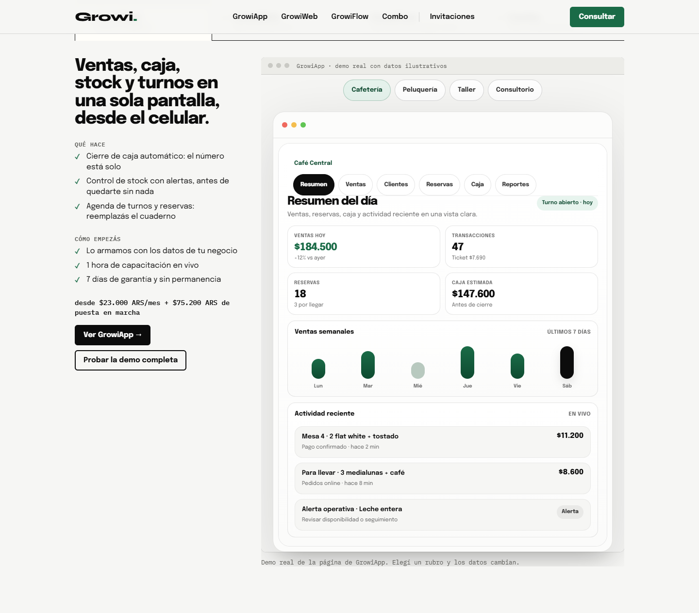
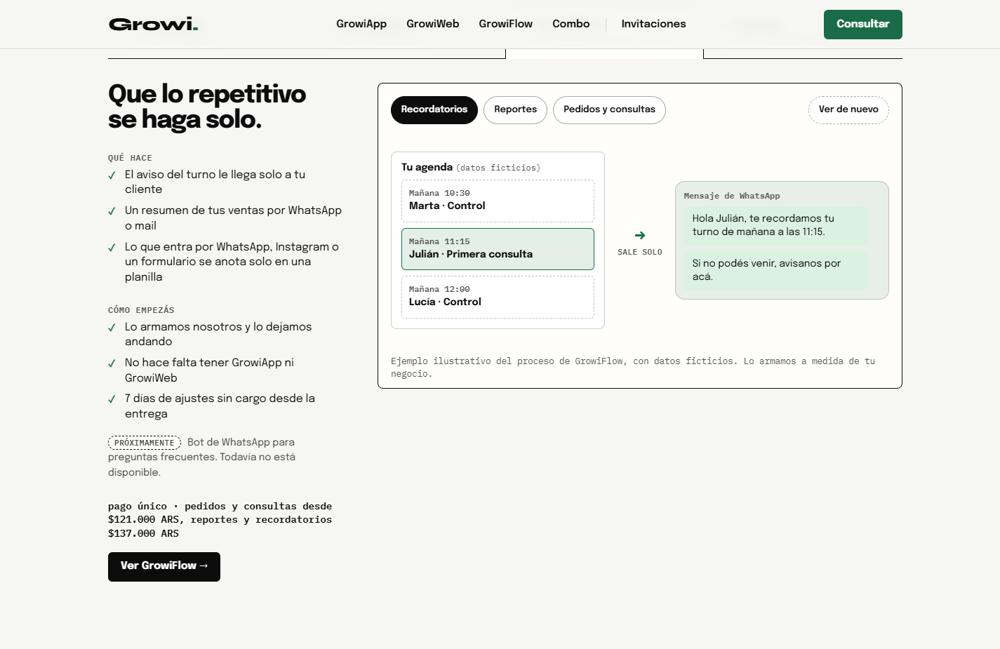
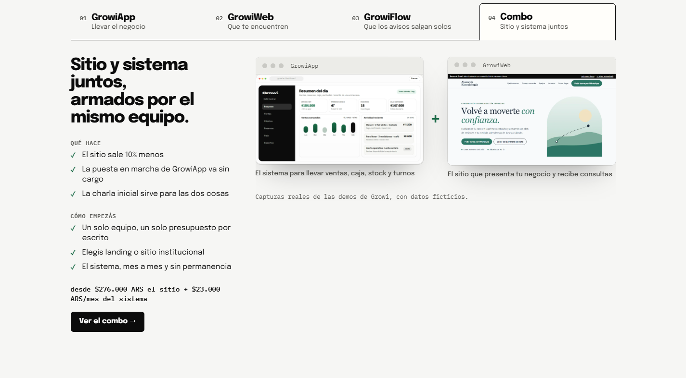

Comparación
Home vigente, candidata 17177a1 y refinamiento r2
Las tres versiones se comparan con capturas reales del mismo ancho. Ninguna está publicada: la vigente es la de producción, las otras dos son locales.
Qué cambia, en una tabla
| Criterio | Sitio vigente | Candidata 17177a1 | Refinamiento r2 |
|---|---|---|---|
| Identidad de la home | Texto + tarjetas por línea | El «presupuesto a la vista» (ticket) es el eje | El producto funcionando es el eje; el ticket pasa a ejemplo secundario |
| Cómo se entiende qué hace Growi | Descripción y mockups estáticos | Descripción y ticket | Explorador con la demo real de GrowiApp, sitios de muestra reales de GrowiWeb, explicación animada de GrowiFlow y combo |
| Navegación | Tres líneas | Cinco líneas | Cinco líneas, con Invitaciones separada como «Para tus eventos» |
| Negocio vs. eventos | Invitaciones fuera del menú | Mezcladas en el menú | Banda propia con capturas reales y separación en el menú |
| Demo interactiva real de GrowiApp | Sí | No (se había perdido) | Sí, reintegrada tal cual (iframe) |
| GrowiFlow «desde» | — | USD 89 (había un paquete de USD 79) | USD 79, con los tres paquetes elegibles |
| «Próximamente» presentado como disponible | — | Sí (factura ARCA con ✓, bot de Flow) | No: marca «pronto», sin tilde |
| Desborde horizontal de la home | No medido | 84 px entre 1001 y 1180 px; 62 px en 1240; 42 px en 1280; 17 px en 1330 | 0 px en 19 anchos (320–1920) y en las cuatro pestañas |
| Precios, descuentos y aviso L1 | Publicados | Sin cambios | Sin cambios (verificados: ver verificación) |
Pantalla inicial en escritorio


Pantalla inicial en móvil (390 px)


Home completa en escritorio


El explorador de producto (r2), una pestaña por línea







r2 en móvil


Qué se pierde
- La candidata 17177a1 tenía un hero más corto. r2 pone el explorador casi de inmediato; la home pasa de unos 4.800 a unos 6.200 px.
- El ticket dejó de ser el eje. Se conserva solo como ejemplo en «Cómo empezar».
- GrowiFlow sigue sin recurso visual real: la animación es ilustrativa y está rotulada como tal.